Vehicle Expenses Automated — full illustrated user manual (HTML for browsers). Edit source: docs/i18n/it/user-manual.md; regenerate with ./scripts/render-user-manual.sh.
Modifica sorgente (Markdown). I browser e il lettore in-app aprono il HTML renderizzato:
- Web:docs/user-manual.html(rigenerare con./scripts/render-user-manual.sh)
- App: Guida/Informazioni → manuale completo (HTML + screenshot in bundle)Non indirizzare gli utenti finali a URL
.mdnon elaborati: i browser mostrano solo testo normale.
Monitoraggio tramite fotocamera dei rifornimenti di carburante e delle spese del veicolo, con sincronizzazione multi-dispositivo opzionale e backup nei tuoi account cloud.
Questo è il manuale completo (screenshot + ogni passaggio). Sul telefono, Menu → Aiuto è una guida introduttiva più breve.
Non trattato qui: Importa vecchie immagini, Esperimento di allineamento ed Esperimento di pompaggio (strumenti per sviluppatori/avanzati).
Questi appaiono nelle schermate principali. Conoscerli risparmia molta caccia.
| Dove | Icona/controllo | Cosa fa |
|---|---|---|
| Barra superiore | ☰ Menù (hamburger) | Apre il cassetto di navigazione |
| Barra superiore | ⓘ (aiuto della pagina) | Breve aiuto per la pagina corrente (accanto al menu quando disponibile) |
| Barra superiore | ?N (giallo) |
Domande in sospeso sulla revisione dell'importazione: apre la revisione dell'importazione |
| Barra superiore | ! (rosso) | Recentemente si è verificato un errore in un foglio di calcolo o in una destinazione per foto: apri Sincronizzazione per correggere |
| Barra superiore | ☰ + ← | I rapporti sui bambini e l'elenco delle spese mostrano insieme menu e viceversa; L'hub dei report è solo menu |
| Impostazioni/modifica carburante | ← | Indietro (le impostazioni del foglio di calcolo/foto e la modifica del carburante rimangono focalizzate sullo sfondo) |
| Riempimento rapido | Cerchio bianco (otturatore) | Acquisisci il display del contachilometri o della pompa per OCR |
| Riempimento rapido | Disco/Salva | Risparmia il rifornimento (necessita di un veicolo e almeno uno di odo/volume/costo) |
| Riempimento rapido | ↕ frecce (cambio modalità) | Alterna la modalità contachilometri rispetto alla modalità pompa (costo/volume). Il bordo verde evidenzia il gruppo di campi attivo |
| Riempimento rapido | ↔ frecce (tra costo e volume) | Scambia costo e volume se l'OCR li inserisce nei campi sbagliati |
| Riempimento rapido | Zoom 1x /... | Rapporti di zoom della fotocamera quando l'obiettivo li supporta |
| Compilazione rapida (dopo l'acquisizione) | Aggiorna sul pulsante principale | Elimina l'anteprima e torna alla telecamera live |
| Compilazione rapida (durante l'elaborazione) | X sul pulsante principale | Annulla l'acquisizione/OCR in corso |
| Spesa | Salva | Risparmia sulla spesa |
| Spesa | Cerchio otturatore | Scatta una foto della ricevuta |
| Spesa | Galleria | Scegli un'immagine della ricevuta dalla libreria |
| Spesa | Riprendi | Cancella la foto della ricevuta corrente e scatta di nuovo |
| Spesa / Gestisci veicoli | + / − FAB | Ingrandisci l'anteprima della foto |
| Finestra di dialogo Punti di riferimento | Modifica OCR | Correggi o aggiungi testo di riferimento mancato dai motori |
| Foglio di calcolo/Moduli fotografici | 🔍 Cerca | Sfoglia Google Drive per un foglio o una cartella (dopo l'accesso) |
I simboli di valuta sui campi dei costi e G/L sui campi del volume sono selezionabili: apri un piccolo menu per modificare la valuta o i galloni rispetto ai litri per quella voce.
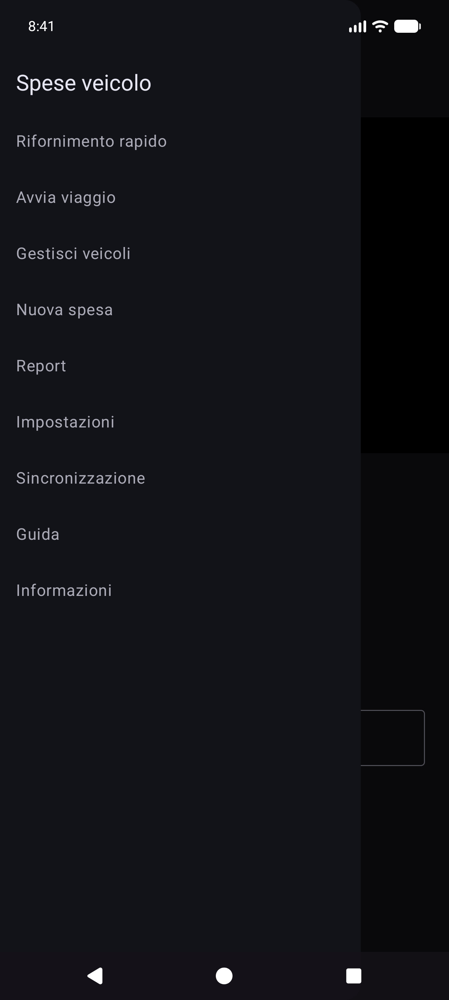
Cassetto principale: Riempimento rapido · Inizia viaggio · Gestisci veicoli · Nuova spesa · Rapporti · Impostazioni · Sincronizzazione · Aiuto · Informazioni.
Cassetto degli esperimenti (Impostazioni → Mostra schermate degli esperimenti): Esperimento di allineamento · Esperimento della pompa · Importa vecchie immagini.
Tramite hub Report (non cassetto principale): Elenco spese · Compila cronologia.
L'OCR e l'abbinamento automatico dei veicoli funzionano meglio dopo aver registrato ciascun veicolo con una foto di riferimento del cruscotto, ritagliato il contachilometri ed eseguito Discovery in modo che l'app memorizzi il testo di riferimento per quel trattino. (Il modo in cui i punti di riferimento vengono scelti e abbinati sarà documentato in maggior dettaglio in un aggiornamento successivo.)
Menu → Gestisci veicoli. Scegli un veicolo (o Aggiungi nuovo veicolo).
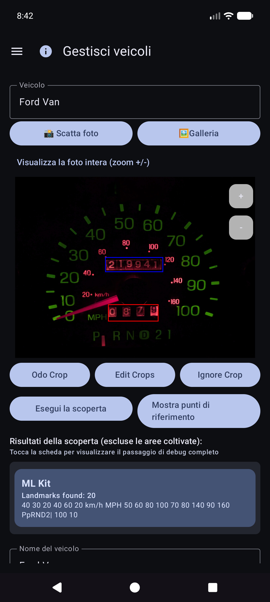
Dopo Mostra punti di riferimento, scorri l'elenco e correggi i valori. A volte nei motori mancano le cifre piccole (ad esempio l'orologio 60 in basso a destra sul quadro strumenti). Utilizza Modifica OCR per aggiungerli o correggerli in modo che l'identità del veicolo rimanga affidabile.
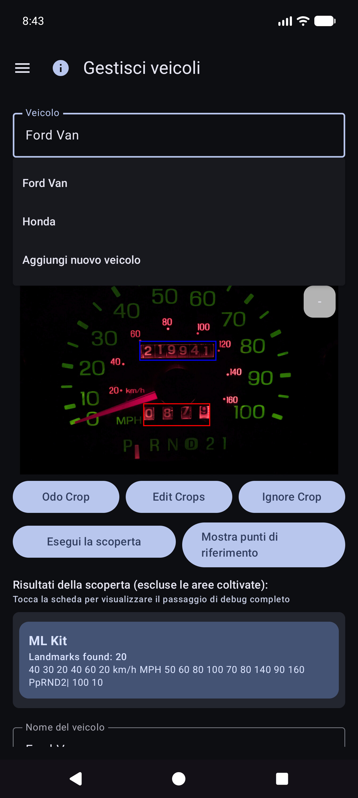
Puoi comunque utilizzare l'app selezionando un veicolo e digitando contachilometri, volume e costo in Compilazione rapida: l'OCR è facoltativo per ogni campo. L'importazione della galleria funziona per la foto del trattino di riferimento quando preferisci non scattare in-app.
Suggerimento: dopo la sincronizzazione del foglio di calcolo, le definizioni dei veicoli (ritagliati, punti di riferimento) risiedono nel database locale: non è necessario riaprire Gestisci veicoli per riempimento rapido per utilizzarle.
L'app è progettata in modo che più telefoni o tablet possano condividere gli stessi dati della flotta e tu possa conservare una copia dei tuoi dati e delle tue foto fuori dal dispositivo. Ciò viene fatto con le destinazioni che tu configuri nei tuoi account o nei tuoi server self-hosted, non in un "cloud spese veicoli" gestito dall'azienda che altre persone possono vedere.
| Gentile | Cosa memorizza | Uso tipico |
|---|---|---|
| Foglio di calcolo/Sincronizzazione tabellare | Veicoli, rifornimenti carburante, spese (righe e schede) | Unione multi-dispositivo + backup strutturato |
| Backup foto | Immagini binarie (trattino/pompa/ricevuta/foto di riferimento) | Backup foto + ripristino file mancanti |
Puoi configurare più destinazioni di ogni tipo (soft cap per tipo). Gli operatori manuali Sincronizza ora e in background eseguono quelli abilitati.
L'accesso e i token rimangono sul dispositivo per i provider scelti (Google, Microsoft, chiavi S3, URL self-hosted e così via). Le destinazioni sono sotto il pieno controllo dell'utente: il tuo account Google, il tuo OneDrive, il tuo bucket MinIO, il tuo host EtherCalc, ecc. Nulla viene condiviso con altri utenti di Spese veicolo tramite un backend condiviso.
Configurato in Menu → Sincronizzazione → Sincronizzazione foglio di calcolo (raggiungibile anche dalle righe di riepilogo delle Impostazioni). Opzioni di selezione di prima classe:
| Obiettivo | Note |
|---|---|
| Fogli Google | Impostazione predefinita comune; schede per veicoli, spese e carburante per veicolo |
| Eccelle | Cartella di lavoro Microsoft tramite rilegatura in stile Graph/OneDrive |
| EtherCalc | Stanze di fogli di calcolo collaborativi self-hosted |
| Altro → backend implementati | Baserow, NocoDB, Airtable, PocketBase, Supabase, Firebase, Zoho Sheet |
Differito/non ancora senza testa (elencato in Altro ma non completamente implementato): OnlyOffice, Collabora. Vedi anche indice self-host.
CSV esportazione/importazione (ZIP con lo stesso layout della scheda) è disponibile da Impostazioni come backup portatile, indipendente dalla sincronizzazione live.
Configurato in Menu → Sincronizzazione → Backup foto (anche dalle righe di riepilogo delle Impostazioni):
| Obiettivo | Note |
|---|---|
| Google Drive | Cartella scelta (sfoglia o incolla l'URL) |
| OneDrive | Account Microsoft + prefisso percorso |
| S3 | AWS, Wasabi, Cloudflare R2, MinIO e altri endpoint compatibili con S3 |
| Altro | Archiviazione supportata da rclone (ad esempio WebDAV, SFTP e altri telecomandi selezionati disponibili nel selettore in-app) |
Configura i cheatsheet per foto e target tabulari ospitati autonomamente: indice self-host.


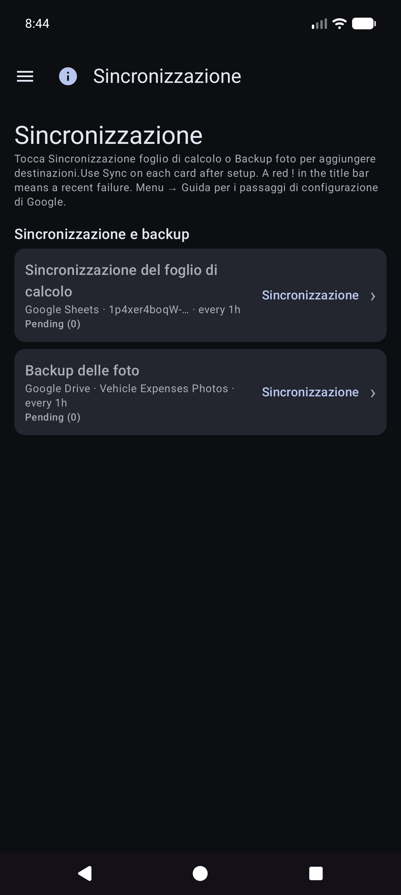
Veicoli, Spese, Carburante - {nome del veicolo}.

La Sincronizzazione manuale ora per le foto è un passaggio completo; il backup in background in genere elabora i caricamenti solo in attesa in base a una pianificazione.
Questa è la schermata iniziale quando apri l'app.
Non è necessario ritirare prima il veicolo. Quando i veicoli hanno punti di riferimento impostati in Gestisci veicoli, Compilazione rapida rileva automaticamente quale veicolo dall'immagine del cruscotto dopo aver acquisito il contachilometri. Puoi comunque aprire il menu a discesa Veicolo per eseguire l'override, se necessario.
Rimani in modalità contachilometri e inquadra il quadro strumenti. Istruzioni: Mirare al contachilometri. Tocca l'otturatore per scattare.

L'OCR compila Odo e tenta di abbinare il veicolo ai punti di riferimento (rivedi entrambi se necessario). Il pulsante principale diventa Riprova per ripetere la ripresa. L'istruzione riassume la lettura.


Rimani su Quick Fill per la tappa successiva (i campi vengono cancellati dopo il salvataggio). Lavora completamente offline; la sincronizzazione viene eseguita successivamente in background quando configurata.
Suggerimento sullo schermo (sotto la riga di istruzioni): Otturatore = cattura · Disco = salva · ↕ = modalità odo/pompa · ↔ = costo/volume di scambio.
Menù → Nuova spesa.

Menu → Rapporti → Elenco spese: sfoglia le spese passate non legate al carburante; aprire un elemento da modificare.

Apri una riga dall'elenco. Venditore, importo, categoria, veicolo e descrizione corretti. Se la ricevuta è solo nel backup della foto (nessun file locale leggibile), utilizza Recupera immagine dall'archivio quando viene visualizzata (funziona con tutte le destinazioni foto configurate).
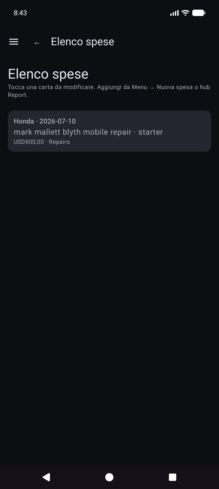
Menu → Inizia viaggio (dopo la compilazione rapida nel drawer). Cattura o inserisci il contachilometri, scegli il tipo di viaggio, salva con l'icona disco. Stop è una scorciatoia per Personale ora nella posizione GPS mantenuta. Utilizza ⓘ per i promemoria di controllo.
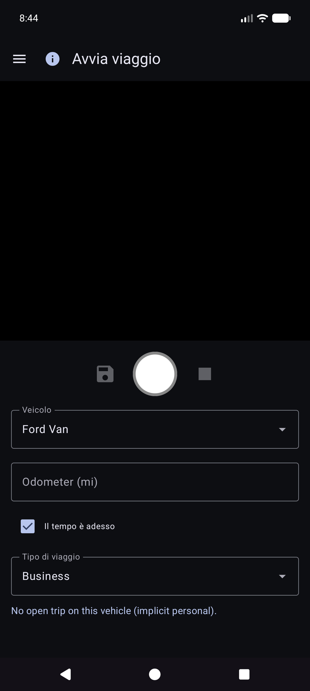
Gli inizi del viaggio vengono memorizzati come righe di carburante con un Tipo di viaggio (non normali rifornimenti). Appaiono in Rapporti → Miglia di viaggio, non in Cronologia carburante.
Menu → Rapporti apre l'hub del prodotto (riepilogo storico + schede catalogo). Questa è l'unica superficie per i resoconti del prodotto: non esiste un elemento separato del cassetto "Rapporti e grafici".
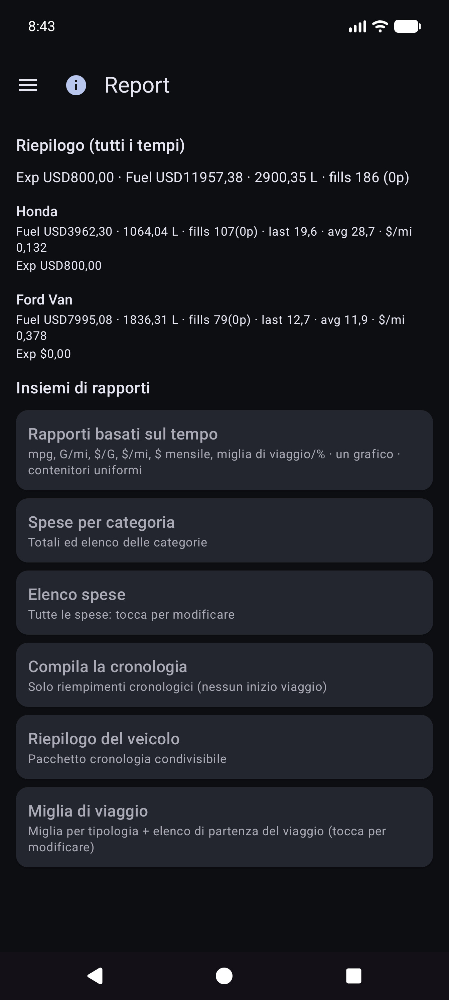
Apri una scheda per la modalità veicolo (Tutti/Ciascuno/Singolo), filtri periodici, grafici e condivisione (TESTO/CSV/PDF). Barra superiore sul rapporto figli: ☰ + ← (e ⓘ se registrato).
La carta cartografica principale. Metriche opzionali (mpg, volume/distanza come G/mi, prezzo unitario come $/G, costo/distanza, $ mensili, miglia di viaggio, % di viaggio per tipo) con contenitori Smooth e scale Y indipendenti (economia a sinistra; denaro e famiglie di viaggio a destra).
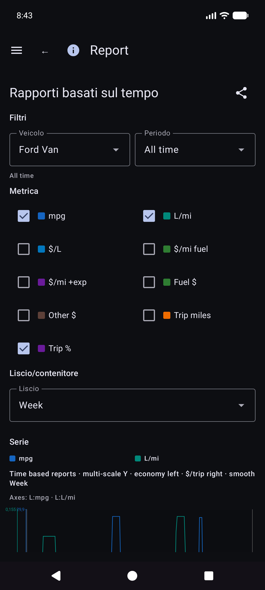
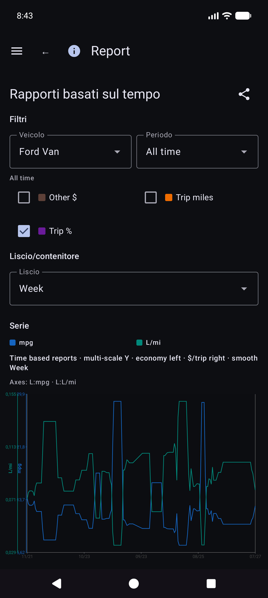
Dettagli sulla matematica economica: REPORTS_METRICS.md.
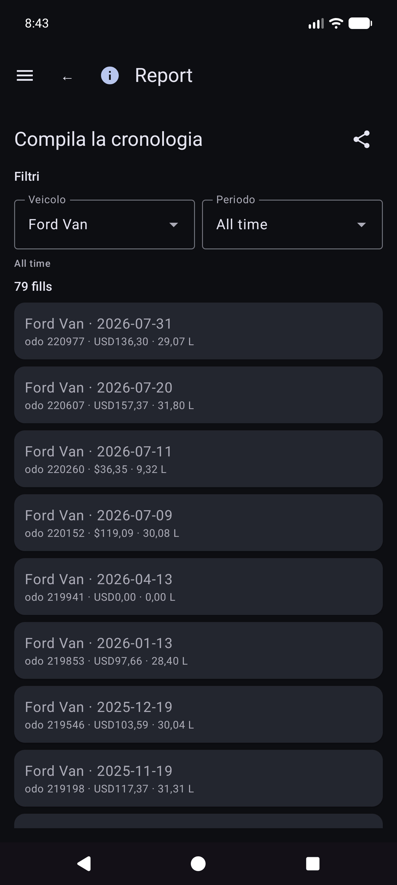
Rapporti → Miglia di viaggio: miglia per tipo, grafici e un elenco cronologico di inizio viaggio/segmento. Tocca un inizio reale per aprire Modifica riempimento per quella riga.

Da Cronologia rifornimenti, Cronologia carburante o Miglia di viaggio, aprire un rifornimento. Layout: veicolo e contachilometri, valuta prima del costo, volume, note. Il tipo di viaggio viene visualizzato solo quando la riga indica l'inizio di un viaggio. La posizione ha un riepilogo più Dettagli sulla posizione. Foto locale mancante con identità cloud: Recupera immagine dall'archivio.
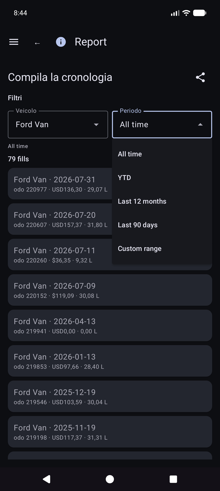
Altre schede del catalogo includono le spese per categoria, riepilogo del veicolo ed elenco delle spese.
Money utilizza la valuta di ogni riga quando impostata. I totali in valute miste mostrano totali parziali per valuta (nessuna conversione FX silenziosa).
Menu → Sincronizzazione è l'hub per fogli di calcolo e destinazioni foto (non solo sepolto in Impostazioni).
Menu → Impostazioni.

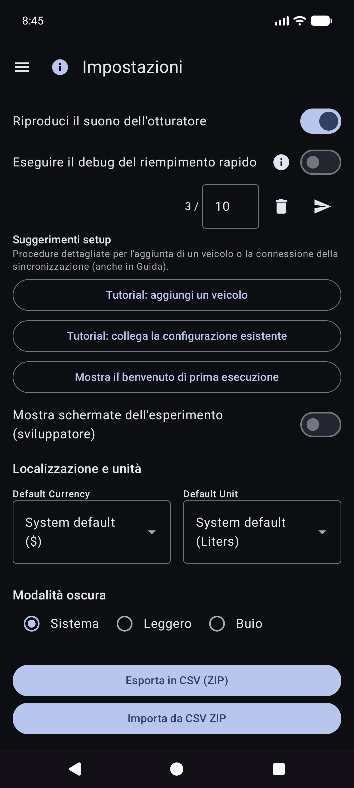
Per le destinazioni, preferisci Menu → Sincronizzazione. Le impostazioni potrebbero comunque mostrare righe di riepilogo che aprono gli stessi elenchi.
CSV esportazione/importazione (ZIP di veicoli/spese/schede carburante) è disponibile da Impostazioni quando offerto dalla build corrente.
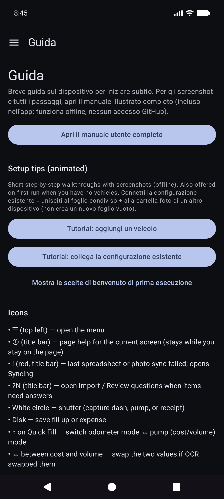
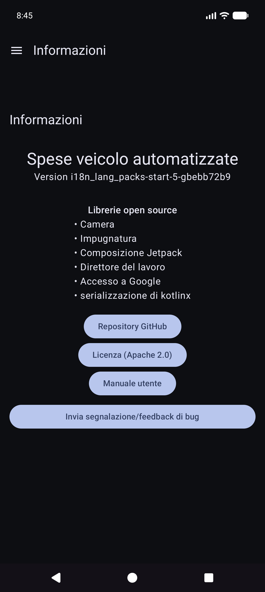